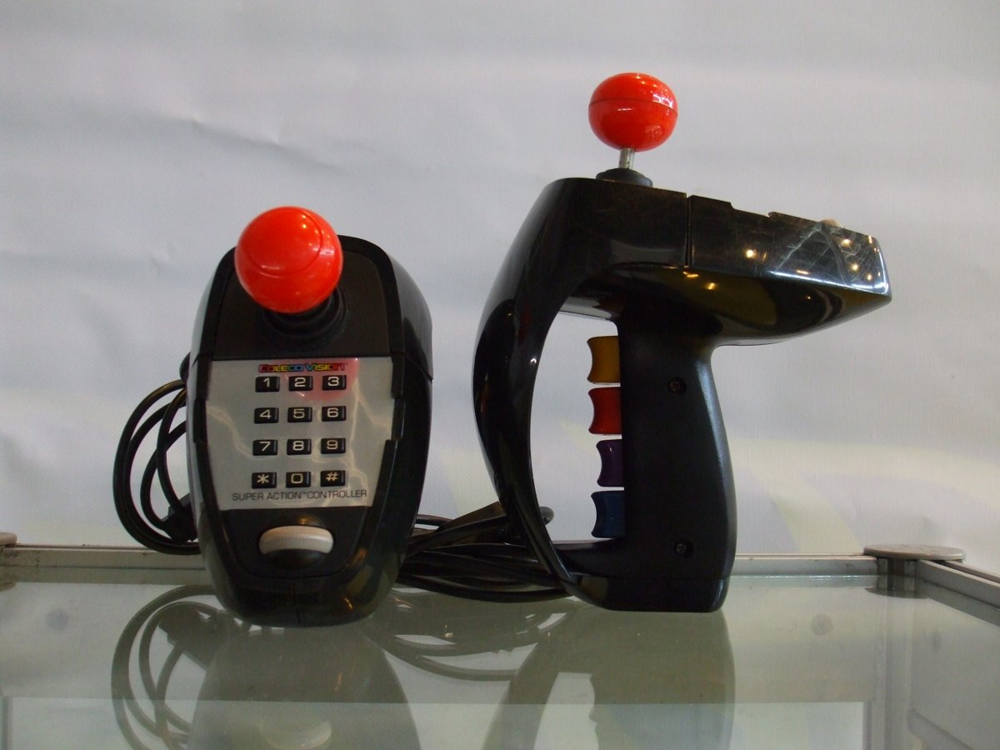

The Thumb That Got a Wheel
In 1983 the Coleco Super Action Controller put a continuously spinning thumb roller inside an otherwise all-digital game grip — the museum's only true analog speed surface, a decade before the scroll wheel.

In the early eighties a video game controller was a box of either/ors. The joystick tilted one of eight ways or it didn't. The buttons fired or they held their peace. The D-pad was a cross of switches. Everything a player told the machine arrived as an on/off verdict — a closed contact or an open one — and the machine answered with the crude, satisfying authority of a switch. It is remarkable, looking back, how long we tolerated living entirely in the boolean world of the thumb. Then, in 1983, Coleco shipped a pair of oversized grips that hid a small act of continuity inside the all-or-nothing digitalism of everything else.
The Coleco Super Action Controller is a fistful of input grammars stacked into one handle: a ball-top joystick, four finger-triggered action buttons, a twelve-button numeric keypad, and — tucked where the thumb naturally falls — a small drum you spin. Coleco called it the "speed roller," and it is a genuinely analog surface: rotate it forward or back and it supplies continuous, proportional input, not a step, not a direction, not a discrete click. Spin it hard for full speed, feather it for a crawl, and the machine reads the rate. It is the museum's only continuously-rotating analog speed-input controller — a wheel for the thumb in an era when thumbs mostly pushed switches.
The strangeness of the roller is not that it exists. The strangeness is what it sat next to. There, in the same grip, was a joystick of gated switches, four pressure buttons, and a keypad of rubber domes — every one of them a binary contact. The Fairchild Channel F had already taught the industry that one knob could hold several grammars by twisting and tilting, and Coleco's grip borrowed that trick. But the speed roller went further than the Channel F's twist-paddle, which still bottomed out into digital detents. The roller is a free-spinning cylinder with no detent, no stop, no click — a continuous transducer that hands the machine a smooth analog value instead of a direction. It is an analog island in a digital sea, and the museum has nothing else quite like it.
That matters for the history of the scroll. We now treat the thumb as the natural agent of continuous motion — we scroll pages with it, drag sliders, spin timeline wheels, scrub video. The laptop trackpad and the smartphone made that second nature, but the gesture did not appear fully formed in the 2000s. It was rehearsed, awkwardly, on peripherals like this one, where a thumb was asked to do the continuous work of setting a rate rather than the discrete work of choosing a state. The scroll wheel that later colonized the mouse, and every inertial jog dial and scrub wheel since, all trace back to this kind of surface: a thing you don't click, you move, and the machine treats how fast you move it as information.
And the roller was not decorative. It was load-bearing. Coleco bundled the controller with Super Action Baseball and made it required for Super Action Football, Rocky, Super Action Boxing, and Front Line — games where proportional speed was the whole point, where the difference between a full sprint and a walk had to be felt, not toggled. A football game with an on/off sprint is a series of abrupt jerks; with the roller it became a gradient. The design bet was that sports games wanted analog nuance, and that the way to deliver it was to put a wheel under the strongest digit and let it spin.
It did not survive. The roller was tied to Coleco's own console, and ColecoVision's reign was short; the controller is remembered, if at all, as the oversized bundle mate to a baseball game. But the bet it made — that a mass-market controller could carry a true proportional surface, and that the thumb would take to it — is a bet we are all still collecting on. The controls that surround you now are full of things you do not press: you slide, you drag, you scroll, you spin. Each of those gestures needed a first wheel to learn on. One of them, in 1983, was this one — a small drum under a thumb, offering continuity where everything else in the room offered only a click.